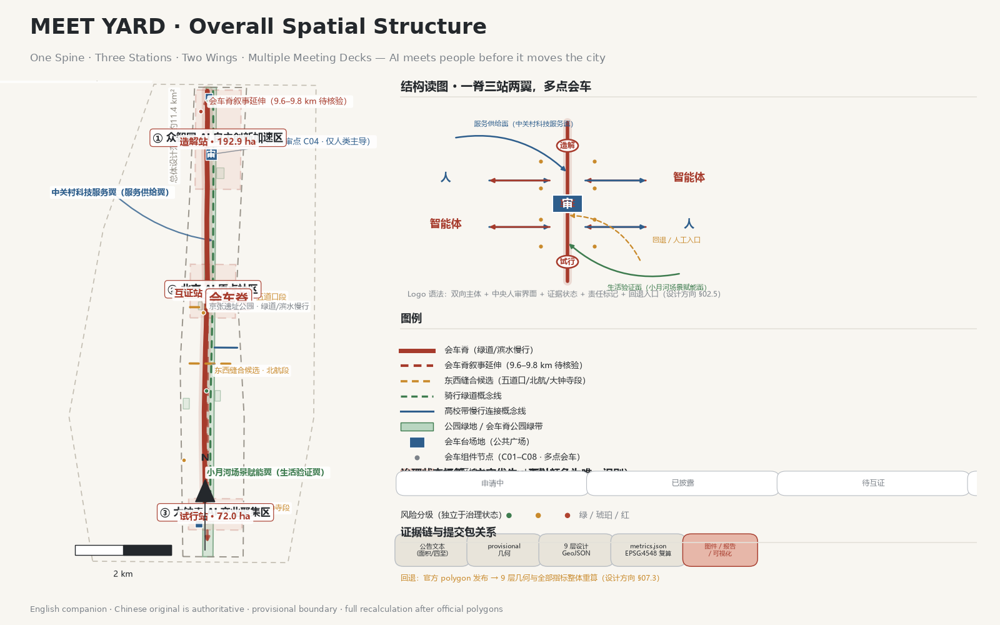
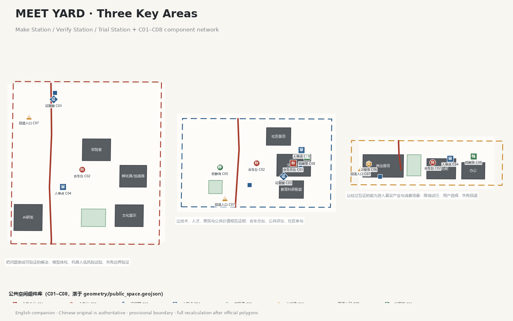
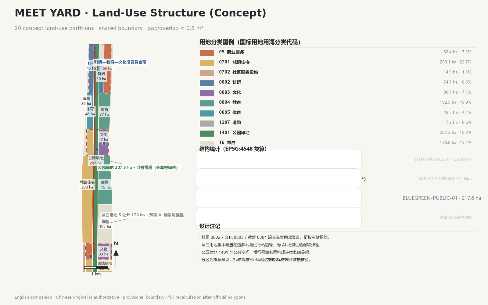
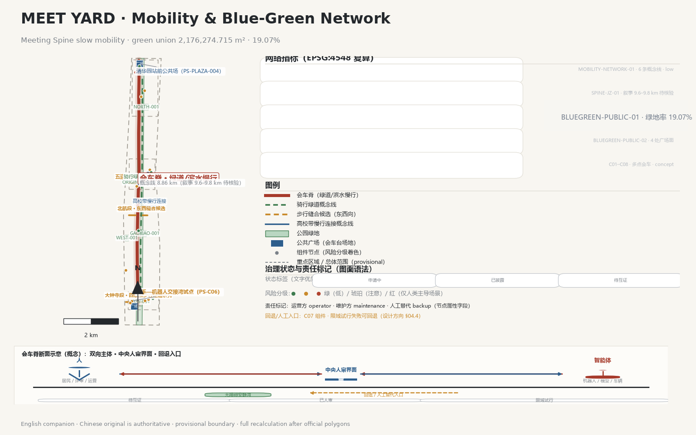
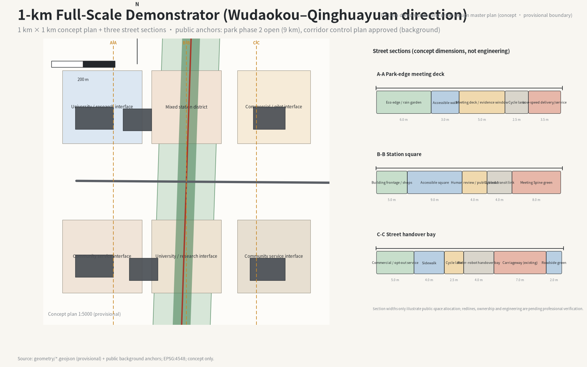
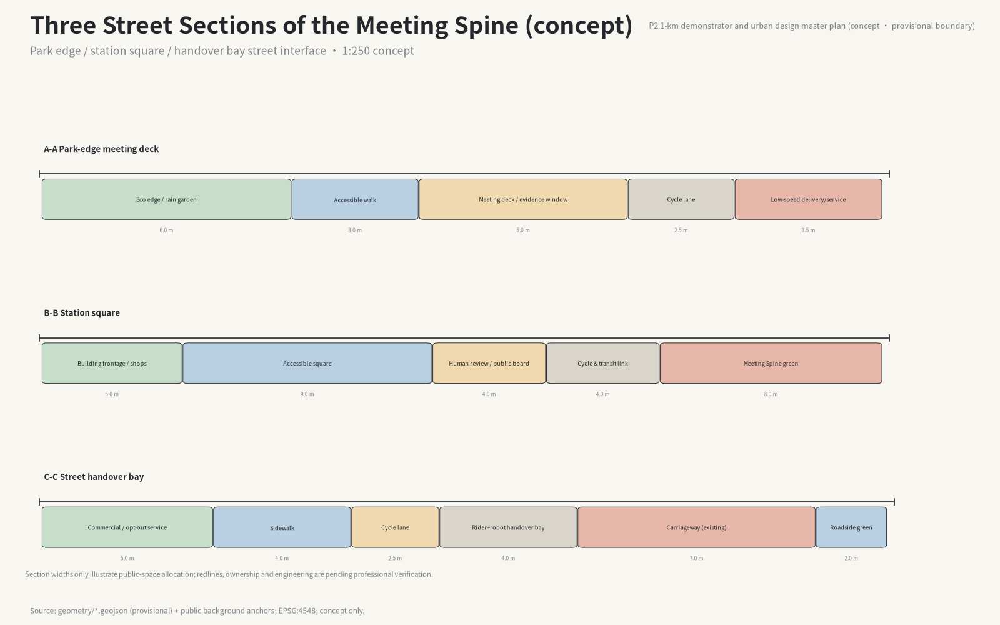
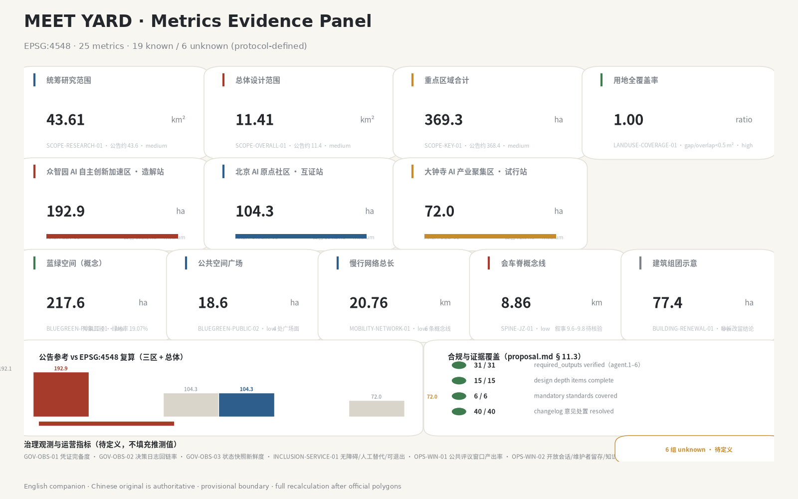

Let AI meet people before it moves the city.
package_state: ready_for_reviewformal-review-readyprovisional boundaryOne Meeting Spine · three stations (Make / Verify / Trial) · two wings · multiple meeting decks. The spine is the Jing-Zhang Railway Heritage Park corridor; all drawings are conceptual advice on provisional geometry.

| Scope | Announced | Recomputed EPSG:4548 | Design question |
|---|---|---|---|
| Coordinated research | ≈43.6 km² | 43,609,232.558 m² | How to organize the AI ecosystem and future urban form |
| Overall design | ≈11.4 km² | 11,412,825.386 m² | How to draw land use, mobility, renewal and townscape |
| Key areas | ≈368.4 ha | 3,692,893.005 m² | How deep to design the three stations |
Zhongzhiyuan Make Station (192.92 ha), AI Origin Community Verify Station (104.32 ha), Dazhongsi Trial Station (72.05 ha). Components C01–C08 bind scenarios S01–S14 to public-space features in geometry/public_space.geojson.



Wudaokou–Qinghuayuan direction. Concept plan and three street sections: park-edge meeting deck, station square, street handover bay. Public anchors: park phase 2 open (9 km) and corridor control plan approved (background only).


Fourteen scenario cards S01–S14 with thresholds, human review, stop triggers and rollback. S03 rider–robot handover bay has the first 100-day delivery contract (D1 site/permission → D2 baseline → D3 tabletop drills → D4 pilot or public no-go).
25 metrics: 19 known / 6 unknown with defined measurement protocols. Protocol schema and deterministic drill: 14/14 checks passed.

| Gate | Result |
|---|---|
| 31 required_outputs (agent.1–6) | 54/54 verified |
| Changelog dispositions | 40/40 resolved |
| Standards / design depth | 6/6 standards · 15/15 depth items |
| self_check | PASS · formal-review-ready |
Official announcement, agent taskbook, site package and source registry are the primary basis. CS01–CS08 case URLs verified; mechanisms remain pending professional review. All geometry is provisional (official_boundary=false); official polygons trigger full recalculation, never patch-by-patch.
English companion of visual/index.html. The Chinese original is authoritative. Offline only: no remote scripts, fonts, tiles, iframes, forms, APIs or tracking.